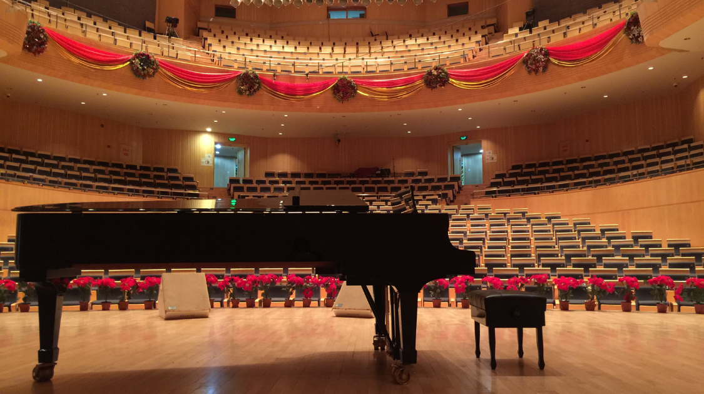

Sports & Entertainment
The International Chopin Piano Competition
By Owen Hu | Published Oct 23, 2021 12:35 p.m. PST

The International Chopin Piano Competition is the most important and prestigious classical music competition in the world. Sponsored by the government of Poland and in honour of the Polish romantic composer Frédéric Chopin, hundreds of the finest pianists from various parts of the world competed to perform in Warsaw in hopes of winning the top prize of €40,000 ($45,000 USD). Beyond the cash prize, winners receive international recognition, and the competition is an exceptional opportunity for those wishing to debut or continue their career on the international stage. Past winners, including the legendary Maurizio Pollini and Krystian Zimerman, have enjoyed the glory that winning the competition has brought. And now, in 2021, another pianist is about to join the ranks of past icons in fame and honour.
The XVIII iteration of the once-every-five-years competition began in July as aspiring pianists competed in the preliminary rounds. Of the 151 that performed in the preliminary stages, the judging jury admitted just 78 pianists to move on. Nine additional pianists also qualified for the main stage after they won other prestigious competitions, for a total of 87 on the main stage. The dream for the top spot intensified in the three stages of the competition, beginning in early October. Only 12 pianists successfully finished all three stages, becoming finalists as they competed from October 18-20. Out of those 12, Bruce Xiaoyu Liu, from Canada, was named as the winner of the competition.
Not only did Liu keep the audience breathless with his cantabile and technically virtuous playing, he has also been propelled to stardom and fame in a historic victory. His teacher, Đặng Thái Sơn, also won the competition in 1980; Liu’s win marked the first time a former winner’s student has won the competition, a historically unprecedented moment. Notably, it’s not hard to see what made Liu unique. His choice of a Fazioli piano rather than the standard Steinway, his dramatic yet graceful playing, his ability to make the audience clap in a standing ovation: these are all factors that made his win so deserving.
Finally, the XVIII iteration of the competition saw monumental gains for the event itself. Drawn to music during a time of isolation and precariousness, millions tuned in on YouTube to watch the talented pianists perform their interpretations. During the climax, YouTube was receiving over 1,300 comments per minute, marking a new high in terms of publicity and interest for the International Chopin Piano Competition. The massive success of the competition may be attributed to its entertainment value, or to views supporting their favourite pianist, or perhaps to the competition’s timeless ability to honour one of history’s most influential composers. Whatever the reason, this much is clear: both casual listeners and classical music enthusiasts alike have been drawn to the rich music that has connected the world in a time of uncertainty.